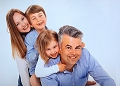

David Fredman
Med. Dr. Karolinska Institutet 2004, post Doc. i Bergen, ass. Professor Wien 2009.
| Född: | 1975 Durrnäs, Piteå, Piteå lfs, Piteå kn. | |
|---|
| Levde: | 1991 Pionen 6, Laxstigen 25, Klubbgärdet, Piteå sfs, Piteå kn. [1] | |
|---|
| Disputation: | 2004-09-24 Karolinska Institutet i Stockholm. [2] | diss.kib.ki.se/2004/91-7140-025-7/
Med.Dr.
|
|---|
| Forskare, Post Doc: | 2005-08 University of Bergen, Norge. [3] | Fredman, David Post Doc
tel. 555 84074
David.Fredman@bccs.uib.no
|
|---|
| Assist Professor: | 2009-03 Universität, Wien, Österrike. | |
|---|
| Levde Sambo: | efter 2012-04 Wien, Österrike. |
|---|
| Vigsel: | 2013-08-10 Shropshire, England. |
|---|
| Levde: | 2017 Ålandsvik, Norge. |
|---|
| Barn: |
|---|
| Dylan Fredman-Danks (2012 - ) |
| Eva Fredman-Danks (2014 - ) |
Noteringar
Civ.ing, bioteknik, Med Dr, biometri, ass. Professor, musikkompositör, AI - makininlärning, artificiell intelligens vid Sonat Consulting AS i Bergen sonat.no/
David Fredman, Civ ing i biometri 26 år i Umeå, uppvuxen i Skuthamn och Klubbgärdet, Piteå. Fick erbudande om att avsluta sin examensuppgift på Karolinska och erbjöds av samme professor därifrån ett doktorsstipendium rakt av om han skulle trivas med sin blivande handledare. Denne professor från Stockholm var särskilt i Umeå för Davids skull. De hade minsann ögonen på våran David! Yes!!! Disputerade 29 år gammal som Med dr från Karolinska Institutet, Stockholm hösten 2004 - doktorsavhandling, och forskade därefter vidare som post. doc. på Universitetet i Bergen, Norge. Han var därefter assisterande professor på Wiens universitet i Österrike. Där byggde han upp en forskargrupp, som med hjälp av datorbaserad analys och molekylärbiologiska metoder studerade de mekanismer, som styr cell- och kroppsutveckling, och hur dessa mekanismer förändrats genom evolution. Förutom det så undervisade han 100-tals kandidater inom sitt forskningsområde. Därefter var såväl han som hustru Gemma tillbaka som forskare vid Bergens Universitet. Sedan några år har först David och senare hustru Gemma Danks från England lockats över till det privata näringslivet i Bergen, Norge. Maskininlärning, Artificiell Intelligens (AI) mm. är vad som nu gäller!
Congrat. Gemma, första kvinnan i ett elitföretag med idel manliga fil dr !!! David Fredman - Partner & Senior Consultant - Sonat Consulting AS
Se också Familjesidan: fredman.se/fredman.se/fam-links.htm
Davids stora fritidsintresse förutom familj och friluftsliv är att komponera musik. Utbildad på piano och bastuba vid Piteå kommunala musikskola, självlärd och etablerad musikproducent med digitala hjälpmedel. Se länkarna:
profile.myspace.com/index.cfm?fuseaction=user.viewprofile&friendid=106460577
www.davidpanda.com
www.satelliterecords.com/live/index.php
Search: Panda
David är skyddsteknikerutbildad vid FOA i Umeå och placerad i bataljonsstaben under sin militära grundutbildning.
David är från början Civilingenjör i bioteknik. Examensarbete vid Karolinska Institutet i Stockholm. Därefter Med. Dr. i biometri därstädes 2004-09-24, 29 år gammal.
Post Doc vid Universitetet i Bergen, Norge 2005-08.
Assist Professor vid Universität, Wien, Österrike 2009-03.
2004-07-12
Forskare har upptäckt en ny form av genetisk variation hos människan.
Länk: info.ki.se/article_se.html?ID=1650
2004-09-24 kl. 10.00-13.00
Doktorsavhandling vid Karolinska Institutet, Fredman, David
"Computational exploration of human genome variation" ISBN: 91-7140-025-7
Institutionen för Cell- och Molekylärbiologis auditorium, Berzelius väg 21, Karolinska Institutet. Opponent: Med. Dr. Stephen Sherer vid Universitetssjukhuset i Toronto
Länk: diss.kib.ki.se/2004/91-7140-025-7/
2009-03
Anställd som assisterande professor på Wiens universitet i Österrike. Där bygger han upp en forskargrupp, som med hjälp av datorbaserad analys och molekylärbiologiska metoder studerar de mekanismer som styr cell- och kroppsutveckling, och hur dessa mekanismer förändrats genom evolution. Förutom det så undervisar han 100-tals kandidater inom sitt forskningsområde. Publicerade vetenskapliga rapporter från 2004 - . Vetenskapliga rapporter - 2009.
Bureanor:
De närmaste anknytningarna (16) till Olof Hersseson [Bodde på stamgården i Bureå. Kallades "Gamle Olof".]
David Fredman ättling tilll Gamle Olof::
Hersesson, Olof (1380 - 1460)
son: Olofsson Bure, Anders (1425 - )
son: Andersson Bure, Påvel (1453 - )
son: Påvelsson, Olof (- 1539)
son: Olofsson, Påvel (Pål)
dotter: Påvelsdotter, Cecilia
dotter: Olofsdotter, Elin (- 1698)
son: Nilsson, Mårten (1661 - 1739)
son: Mårtensson, Nils (1712 - 1801)
son: Nilsson, Per (1744 - 1816)
son: Persson, Fredrik (1793 - 1858)
son: Forsberg, Per Adolf (1823 - 1891)
son: Forsberg, Adolf Fredrik (1864 - 1938)
dotter: Forsberg, Eva Kristina (1899 - 1965)
dotter: Granström, Ruth Elvira (1923 - 1997)
son: Fredman, Jan (1946 - )
son: Fredman, David Jan Ingvar (1975 - )
Släktförhållande till Kronprincessan Victoria Bernadotte
David Jan Ingvar Fredman är farfars morfars morfars farfars farfars mormors farmors farfars farfars farfars brorsons sonsons sonsons sonsons sonsons sonsons dotterdotters dotterdotters dottersons dotterdotters sonson till Victoria Ingrid Alice Désirée Bernadotte:
Bernadotte, Victoria Ingrid Alice Désirée (1977 - )
far: Bernadotte, Carl XVI Gustaf Folke Hubertus (1946 - )
far: Bernadotte, Gustaf Adolf Oscar Fredrik Arthur Edmund (1906 - 1947)
mor: of Connaught, Margaret (Margareta) Victoria Augusta Charlotte Norah (1882 - 1920)
far: of Connaught and Strathearn, Arthur (1850 - 1942)
mor: av Kent och Strathearn, Alexandrina Victoria I (1819 - 1901)
far: av Kent och Strathearn, Edward Augustus (1767 - 1820)
far: av Storbritannien, George III (1738 - 1820)
far: av Wales, Frederick Ludvig (1707 - 1751)
far: av Hannover, George II, George Augustus (1683 - 1760)
far: av Hannover, George I (1660 - 1727)
mor: von der Pfalz, Sofia (1630 - 1714)
mor: Stuart, Elizabeth (1596 - 1662)
far: Stuart, James (Jakob) VI, I (1566 - 1625)
mor: Stewart, Mary I (1542 - 1586)
far: Stewart, James V (1512 - 1542)
far: Stewart, James IV (1473 - 1513)
far: Stewart, King of Scots, James III (1451 - 1488)
far: Stewart, King of Scots, James II (1430 - 1460)
far: Stewart, King James I of Scots, James (1394 - 1437)
far: Stewart, King of Scots, Robert III (John) (1337 - 1406)
bror: Stewart, 1st Duke of Albany, Regent, Robert (1339 - 1420)
son: Stewart, 2nd Duke of Albany, Earl of Fife, Earl of Menteth, Murdach (1362 - 1425)
son: Stewart of Lennox, Master of Fife, Sir Walter (1395 - 1425)
son: Stewart, 'Baron of Morphie', Walter (1424 - 1488)
son: Stewart of Avandale, Alexander (- 1489)
son: Stewart, 2nd Lord of Avondale, Master of Ochiltree, Lord Andrew (- 1513)
son: Stewart, 3rd Lord Avandale, 1st Lord Ochiltree, Lord Andrew (1494 - 1548)
son: Stewart, 'The Good', 2nd Lord Ochiltree, Andrew (1521 - 1601)
son: Stuart (Stewart), Hans (John) (1542 - 1618)
son: Stuart, Anders (Andrew) d y (1589 - 1679)
son: Stuart, Johan Anders (1628 - 1669)
son: Stuart, Hans (- 1719)
dotter: Stuart, Elsa Beata (1708 - 1746)
dotter: Fellenia, Gustava Johanna (1740 - 1788)
dotter: Norborg, Beata Christina (1768 - 1853)
dotter: Jonsdotter, Gustava Johanna (1802 - 1893)
dotter: Karlsdotter Lundström, Christina Catharina (1826 - 1896)
son: Forsberg, Adolf Fredrik (1864 - 1938)
dotter: Forsberg, Eva Kristina (1899 - 1965)
dotter: Granström, Ruth Elvira (1923 - 1997)
son: Fredman, Jan Inge Roland (1946 - )
son: Fredman, David Jan Ingvar (1975 - )
Personhistoria
| Årtal | Ålder | Händelse |
|---|
| 1975 |
|
Födelse 1975 Durrnäs, Piteå, Piteå lfs, Piteå kn |
| 1977 |
|
Brodern Musiker Peter Fredman föds 1977 Skuthamn, Piteå lfs, Piteå kn |
| 1982 |
|
Systern Maria Fredman föds 1982 Skuthamn, Piteå lfs, Piteå kn |
| 1982 |
|
Makan Gemma Barbara Danks föds 1982 Shrewsbury, Shropshire, UK |
| 1991 |
|
Levde 1991 Pionen 6, Laxstigen 25, Klubbgärdet, Piteå sfs, Piteå kn [1] |
| 2004 |
|
Disputation 2004-09-24 Karolinska Institutet i Stockholm [2] |
| 2005 |
|
Forskare, Post Doc 2005-08 University of Bergen, Norge [3] |
| 2009 |
|
Assist Professor 2009-03 Universität, Wien, Österrike |
| 2012 |
|
Sonen Dylan Fredman-Danks föds 2012 Allgemeines Krankenhaus, Wien |
| >2012 |
|
Levde Sambo Gemma Barbara Danks efter 2012-04 Wien, Österrike |
| 2013 |
|
Vigsel Gemma Barbara Danks 2013-08-10 Shropshire, England |
| 2014 |
|
Dottern Eva Fredman-Danks föds 2014 Bergen (No) |
| 2017 |
|
Levde Gemma Barbara Danks 2017 Ålandsvik, Norge |
Dokument
Källor
| [1] | Mantalslängd 1991, Norrbottens län |
| |
| | |
| [2] | http://diss.kib.ki.se/2004/91-7140-025-7/ |
| |
| | |
| [3] | www.fredman.se |
| |
|
 |
2019-06-07. David Fredman vid
Sonat.no
|
| |
|  |
| 2019. Familjen Fredman-Danks |
| |
|
2005. David Fredman, aka David Panda
profile.myspace.com/index.cfm?fuseaction=user.viewprofile&friendid=106460577
|
| |
 |
| 2004-09-24. David och Maria Fredman innan Davids disputation vid KI, Stockholm. |
| |
|
| 2007-09. David Fredman, Med.Dr. och Post.Doc. i Bergen, Norge. |
| |
 |
| 2001-06-08. Katarina Eklund, David, Maria, Peter och Jan Fredman gratulerar studenten Maria. |
|


{kind=link}
{kind=link}
{kind=link}